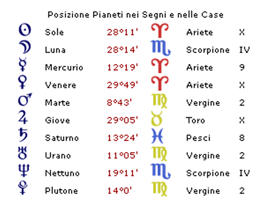
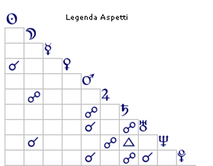

Casi Astropsicologici
La Fame che il Cibo Non Sazia
I dati personali sono stati modificati per tutelare la privacy


La Fame che il Cibo Non Sazia
Prima ancora di analizzare i singoli aspetti di questo tema natale, è possibile individuare un filo conduttore che attraversa l'intera configurazione astrologica come una crepa attraversa un muro: la fame affettiva. Infatti al centro di questo tema natale si staglia una configurazione di rara potenza tensiva: un'opposizione lungo l'asse II–VIII casa (denaro, risorse, sopravvivenza materiale) che si intreccia con una seconda opposizione sull'asse IV–X casa, che coinvolge Giove in Toro in X casa, e la congiunzione Luna/Nettuno in Scorpione in IV casa, minando fortemente il bisogno di nutrimento affettivo.
In astrologia, la sovrapposizione di due assi conflittuali sugli stessi temi — cibo, denaro, nutrimento emotivo — è il segnale di una ferita che ha strutturato l'intera personalità attorno a un unico, ossessivo punto dolente (la fame affettiva).
Non una mancanza generica di amore, ma qualcosa di più specifico — il disallineamento tra i bisogni emotivi strutturali di questo soggetto e ciò che l'ambiente familiare era in grado di offrire.
Un Ascendente Leone con un Sole congiunto a Venere in Ariete in X casa non descrivono una personalità che si accontenta di esistere in silenzio. Descrivono qualcuno che ha bisogno di essere vista, ammirata, riconosciuta come straordinaria. Per questa struttura psicologica, l'attenzione non è un lusso — è ossigeno.
E l'ossigeno, nell'infanzia, scarseggiava.
Nella Casa della sua Infanzia il tema del “Denaro” occupava tutto lo spazio. La congiunzione Luna/Nettuno in Scorpione in IV casa — la casa dell'infanzia, della madre, delle radici emotive — opposta a Giove in Toro in X casa racconta con precisione l'atmosfera domestica. La Luna rappresenta la madre e Nettuno è l'ansia diffusa. Lo Scorpione ci parla di tormento.
La madre di questo soggetto era fisicamente presente ma emotivamente altrove. Troppo occupata e tormentata nel fare quadrare i conti per accorgersi che sua figlia aveva bisogno di uno sguardo, di un applauso, di qualcuno che le dicesse "sei straordinaria".
La triplice congiunzione Marte/Urano/Plutone in Vergine in II casa, opposta a Saturno in Pesci in VIII casa, conferma e amplifica questo scenario. La Vergine in II casa è indice di un ambiente modesto dove il risparmio assume un' importanza elevata: ogni centesimo contato, ogni spesa superflua è giudicata come un peccato. Saturno in opposizione — austero, inflessibile — rendeva questa atmosfera ancora più pesante, quasi penitenziale.
In quella casa, la bellezza era superflua. La creatività era uno spreco. Le emozioni erano un lusso che non ci si poteva permettere.
Per una bambina con Ascendente Leone e il Sole in Ariete, crescere in quell'ambiente equivaleva a crescere in un posto dove la sua lingua madre non veniva parlata. Capiva le parole, ma non si sentiva mai davvero compresa.
Di fronte a un ambiente che non la rispecchiava, il soggetto ha fatto l'unica cosa possibile: ha costruito un'identità per contrasto. Se la famiglia era grigia, lei sarebbe stata luminosa (Ascendente Leone). Se la famiglia era austera, lei avrebbe celebrato la bellezza (Sole congiunto a Venere). Se la famiglia parlava solo di risparmio, lei avrebbe rifiutato quella grammatica con tutto se stessa.
Il Sole arietino combatte, rivendica, conquista, non è passivo. E Mercurio isolato in IX casa conferisce la capacità di distanziarsi mentalmente e di costruirsi un altrove, un sistema di valori alternativo, una geografia interiore lontana da quella in cui è nata.
Ma c'è un paradosso doloroso in questa ribellione. Più il soggetto si allontanava mentalmente da quell'ambiente, più ne portava il segno nel corpo e nelle scelte. La ferita non guarisce con la fuga — si trasforma e spesso è il Corpo a parlare per noi. L'asse II–VIII casa, in astrologia morpurghiana, governa non solo il denaro ma anche il modo di nutrirsi. Qui questo asse è potentemente attivato: la Vergine in II, i Pesci in VIII, con i pianeti in conflitto fra loro. Anche l' asse IV-X è potentemente attivato da Giove leso in Toro — la bocca — che si oppone alla congiunzione Luna/Nettuno in IV casa, sede del nutrimento emotivo.
Combinazioni quindi che si prestano a rappresentare il cibo, l' alimentazione, il nutrimento. La traduzione psicosomatica è lineare quanto spietata: quando il nutrimento emotivo è mancato, il corpo cerca compensazione nel nutrimento fisico. Il cibo diventa il linguaggio con cui si tenta di colmare un vuoto. La Luna lesa da Giove in Toro suggerisce abbuffate ansiose, ingestione compulsiva. Nettuno aggiunge la componente dissociativa — si mangia senza esserci davvero, come in uno stato alterato, nel tentativo di spegnere l'ansia piuttosto che sentirla.
La Vergine e i Pesci sull'asse II–VIII completano il quadro clinico: la Vergine ossessionata dal controllo, i Pesci incapaci di mantenere qualsiasi confine. Il risultato è un rapporto con il cibo che oscilla tra restrizione e eccesso, tra il tentativo disperato di controllare e la resa totale.
Il corpo sta urlando ciò che la mente ha imparato a tacere: ho fame. Non di questo, ma ho fame.
Il dramma però raggiunge il suo apice, quando per un meccanismo che Freud chiamava “coazione a ripetere”, tendiamo a ricreare le situazioni dolorose del passato, non per masochismo, ma perché rappresentano l'unica grammatica relazionale che conosciamo. In questo caso, il soggetto sceglie inconsciamente un partner che le ripropone una situazione molto simile al suo vissuto infantile.
La cuspide della VII casa in Acquario indica che il partner è rappresentato da Urano — lo stesso Urano che si trova nella II casa afflitta, nella triplice congiunzione con Marte e Plutone in Vergine, colpito da Saturno. Il partner si è inserito esattamente nel punto più dolente del tema: il conflitto attorno al denaro e alle risorse.
Il marito che frena, che impone limiti alle spese, che riporta alla concretezza — è, emotivamente, la stessa figura della madre troppo occupata a fare i conti.
E il soggetto risponde esattamente come rispondeva da bambina: con la ribellione ed il rifiuto. La triplice congiunzione Marte/Urano/Plutone in Vergine in II casa infatti, si traduce per il soggetto in acquisti compulsivi. Spendere non è più solo spendere — è un atto di ribellione, un esercizio di potere, un tentativo disperato di affermare la propria esistenza contro chi vorrebbe ridurla a un bilancio in pareggio.
Ma Saturno che si oppone ad Urano frena questa libertà. E il ciclo ricomincia: limitazione, ribellione, limitazione.
In terapia di coppia, questo schema si chiama danza complementare: due persone che si scelgono inconsapevolmente perché i loro sistemi di ferite si incastrano alla perfezione, replicando all'infinito lo stesso copione.
A questo punto il soggetto, che è triste per quello che ritiene un incontro sfortunato, spera di trovare la serenità realizzandosi nella maternità. Giove in Toro in X casa è il pianeta più potente di questo tema: esaltato, angolare, dominante. Come governatore della V casa — i figli — indica con chiarezza questo suo desiderio.
Ed è comprensibile. Profondamente comprensibile.
Chi non ha ricevuto abbastanza attenzione da bambino spesso diventa il genitore più devoto. Finalmente può stare dall'altra parte — può essere la fonte del nutrimento invece che chi lo implora. Può dare ciò che non ha ricevuto.
Ma Giove in opposizione alla congiunzione Luna/Nettuno rivela il rischio nascosto in questa generosità: il confine tra nutrire e fagocitare si fa sottile. La fame affettiva non risarcita nell'infanzia rischia di trasformare il figlio in un oggetto riparatorio — qualcuno che deve restare vicino, dipendente, connesso, per colmare quel vuoto che esisteva molto prima di lui.
Il cordone ombelicale non viene reciso. Non perché manchi l'amore — anzi, è troppo amore, o meglio, è amore mescolato a bisogno. Ed è Mercurio isolato in IX casa a suggerire l'epilogo più probabile: il figlio, diventato adulto, sceglierà la lontananza. La stessa fuga che la madre aveva operato dalla sua famiglia d'origine. Lo stesso Mercurio. Lo stesso bisogno di costruirsi un altrove per respirare.
La ferita si trasmette, cambiando forma.
Questo tema natale racconta la storia di una fame affettiva originaria — il disallineamento tra i bisogni strutturali di un soggetto costruito per brillare e un ambiente familiare dove tutto lo spazio emotivo era occupato dall'ansia economica.
Da quella fame derivano, come ramificazioni di un'unica radice:
1)Il rifiuto identitario dell'ambiente d'origine e la costruzione di un sé per contrasto.
2)Il rapporto distorto con il cibo, dove il nutrimento fisico tenta di compensare quello affettivo.
3)La scelta inconsapevole di un partner che replica la dinamica familiare originaria a cui risponde con gli acquisti compulsivi come atto di ribellione e affermazione di esistenza.
4)Il rischio simbiotico nella maternità, dove il figlio diventa il destinatario di un risarcimento che non gli appartiene.